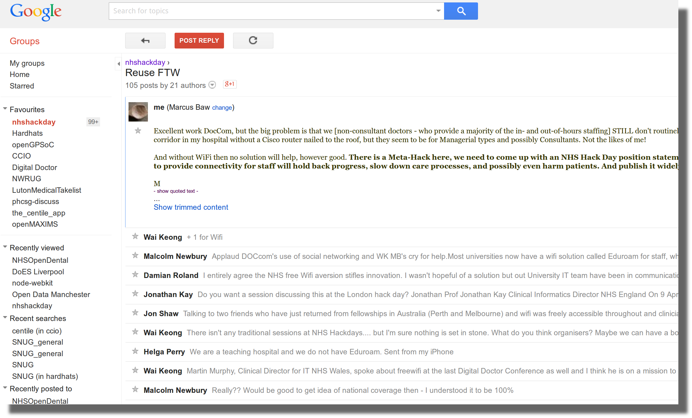

#nhswifi2014
survey of WiFi access for NHS staff
@marcus_baw
Locum General Hacktitioner, North West UK
Director, @openGPSoC & BawMedical
eHealth, Dermatology, Prison, Hospice
Medical Director, @NeovaHealth
Previous Life #1: Emergency Physician
Previous Life #2: Anaesthetist
Previous Life #1: Emergency Physician
Previous Life #2: Anaesthetist
2013
http://bit.ly/1xG4Dhy in places where WiFi was present, local clinicians assumed everybody had similar levels of WiFi access
conversely, where WiFi was absent, clinicians assumed nobody had WiFi
nobody actually had a picture of WiFi access across the whole NHS
2013

John Popham - Patient WiFi
2013 results
"Which of the following best describes Staff access to WiFi at your place of NHS work?"
My organisation has a free WiFi network and I have the password 20.30%
My organisation has a free WiFi network but I do not have the password 20.18%
My place of work has installed its own free WiFi outside of NHS provision 2.63%
WiFi service that is not free (eg Commercial Provider) 3.76%
No WiFi - there are no WiFi networks at all 36.22%
EduRoam academic network 1.38%
The "12%"
12.16% responded 'Other'
A large proportion of these were along the lines of
"There is WiFi for managers and IT staff only"